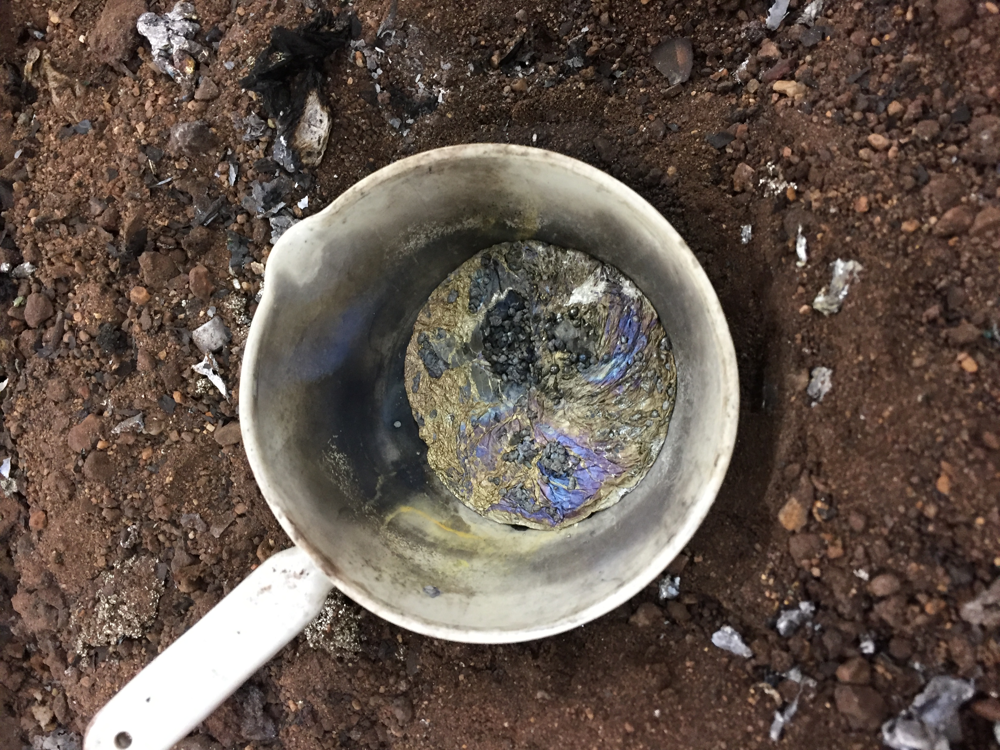
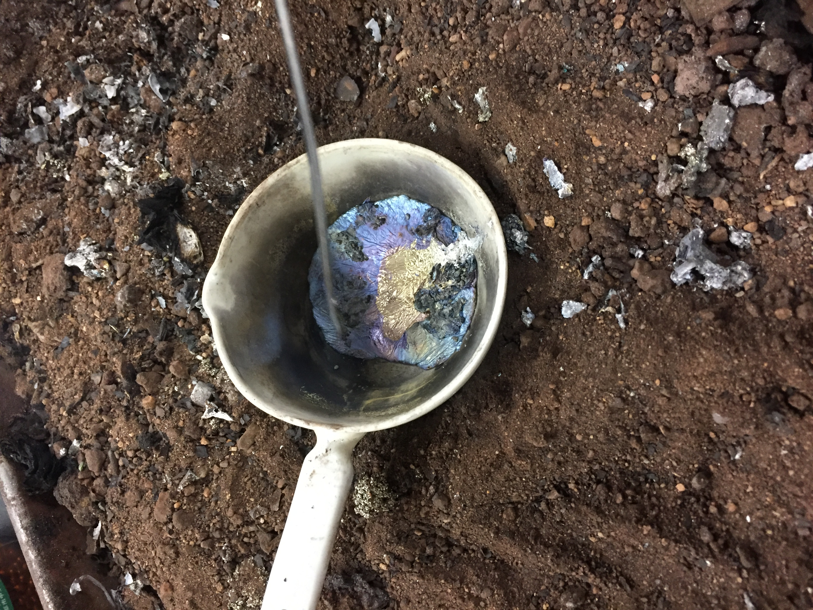
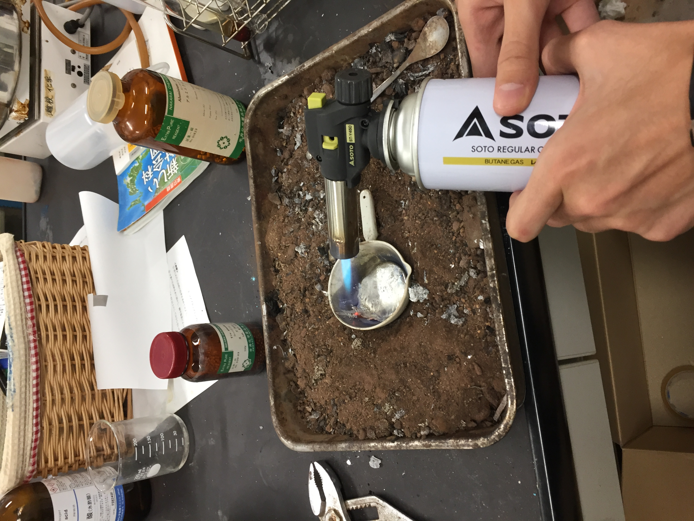
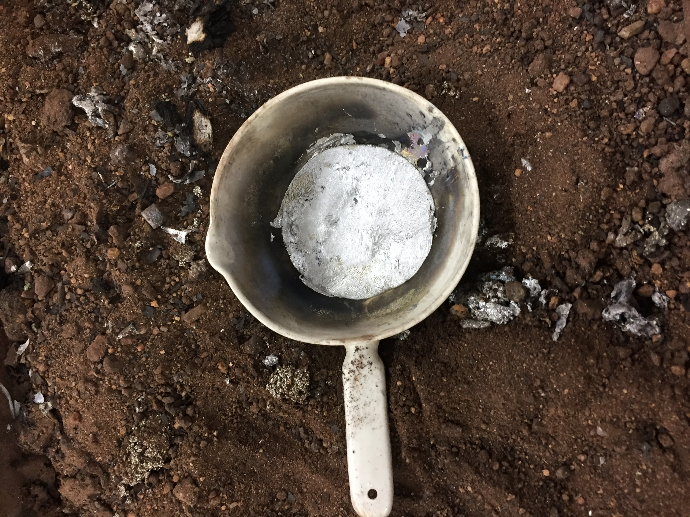
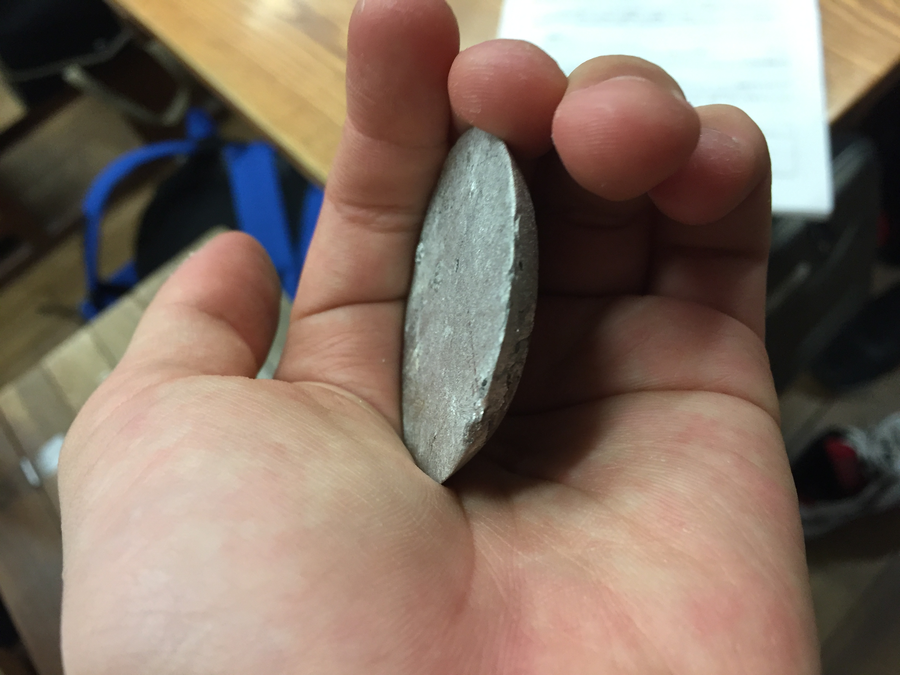
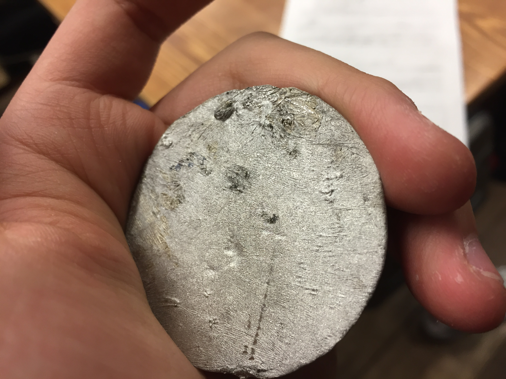

適当に選んだ金属の合金作成
中1の頃の最初の実験
当時のワタクシにとっての立派な実験だったが4つ上の先輩のお遊びを真似ていただけだったのでほぼ全ての先輩から74回は金属を遊んで消費したと見られた 解せぬ
追記: 大昔の記憶なので定かではないが、ビスマス、スズ、鉛、アルミを入れて作った記憶がある
確かカドミウムも追加で入れようとしたクソガキ(僕)は善良で賢明な先輩方に全力で止められた
当時は邪魔で仕方なかった「中学生実験は高校生の付き添いが必要」の大切さを後から吐き気がするほど思い知らされることになる
それにしても灘校生活最初の実験というのは流石に感慨深いものがあって、今でも初めて作品を作った瞬間の達成感と満足感は忘れられません
合金
- 
- 
- 
- 
- 
- 